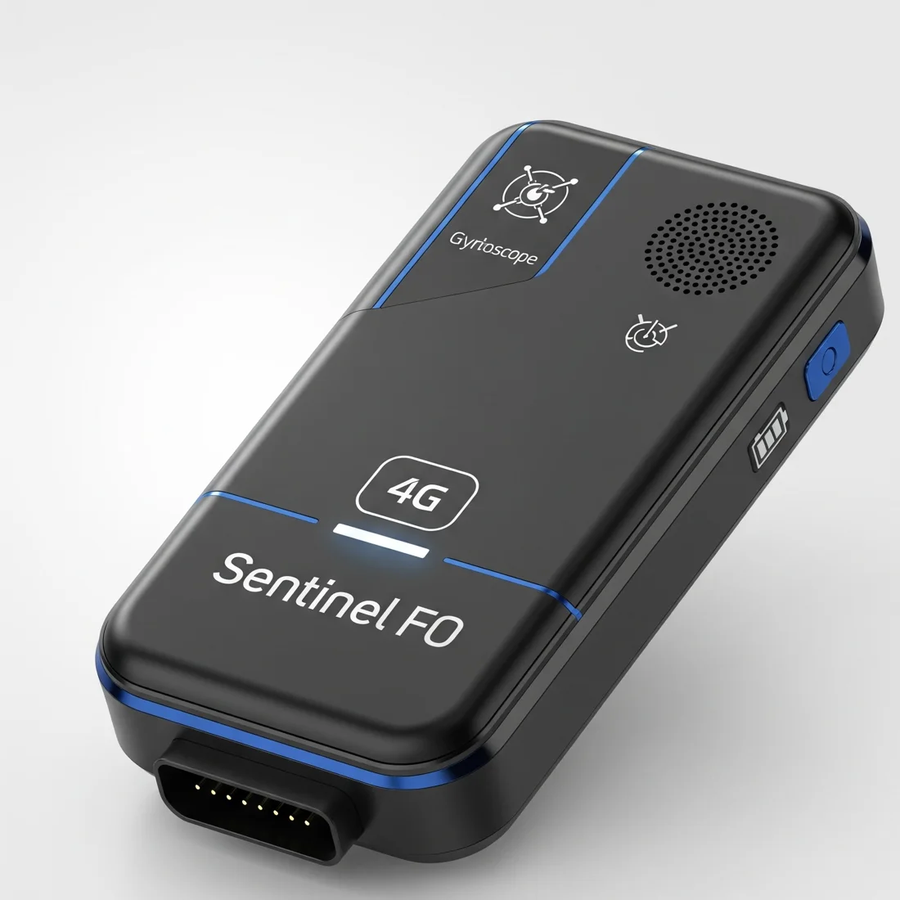
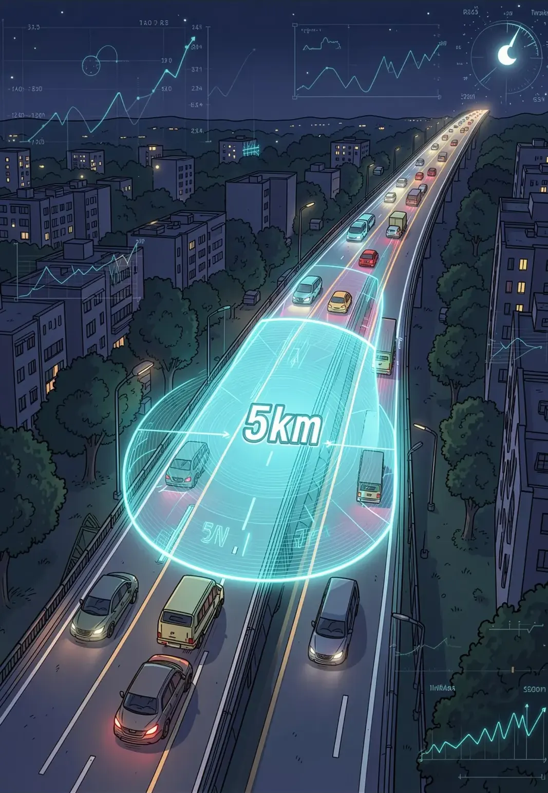
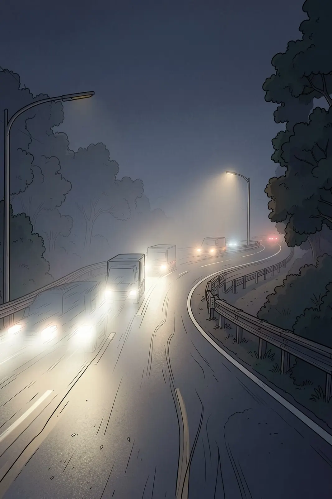
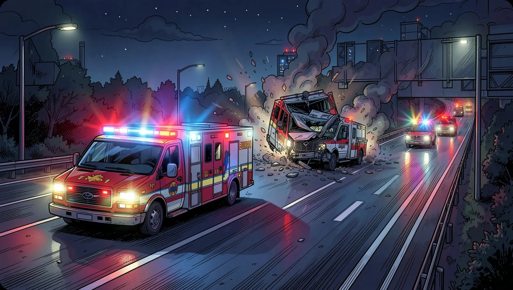
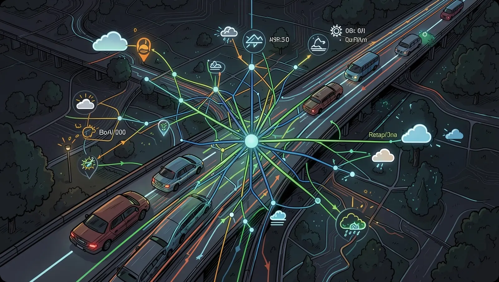

SentinelFO
The intelligent road-safety co-pilot
Connecting the vehicle, the road, the environment, the driver and the emergency network into one safety loop.

Road safety is asystem problem.
The vehicle can know something.The road can know something.The driver can know something.But they often do not know it together.
VEHICLE
speed · motion · condition
ROAD
limits · curves · breakers
CONTEXT
weather · traffic
DRIVER
attention · decision
EMERGENCY
crash · location · response
FLEET
shared learning
Connect thedisconnected.
Sentinel FO is not just a device. It is the bridge between multiple safety ecosystems. Tap any source to see what it contributes.
One safety loop
Every source feeds the same decision, so the system sees the whole situation rather than one signal at a time.
The in-vehiclemodule.

Tap a point
Explore what is inside the module.
One compact edge unit can act as the vehicle’s safety gateway.
VEHICLE DATA
Speed, diagnostics and vehicle-side signals
MOTION
IMU / acceleration / orientation
LOCATION
GPS + route progression
CONNECTIVITY
Cellular / Wi-Fi / Bluetooth pathways
LOCAL INTELLIGENCE
Local storage + processing when connectivity degrades
ACTION
Audio/visual guidance + compatible control pathway
Designed to operate as an OEM-integrated module, a retrofit gateway, a fleet device, or a safety platform that uses different subsets of the architecture.
End to end.
Edge / Vehicle bridge
Acquires and exchanges vehicle + sensor information.
- OBD / CAN and vehicle interfaces
- GPS / network / Bluetooth / Wi-Fi
- IMU and motion sensing
- Accelerator / pedal-related input
- Local storage + local processing
- Audio / visual alerts
- Vehicle control interface
- Emergency communication
Intelligence layer
Turns raw signals into a road-aware decision.
- Traffic context
- Weather + visibility
- Legal speed limits
- Speed breakers / signs / junctions
- Curves / elevation / geofences
- Forward road context
- Optimal speed · Safe speed
- Risk index · Adaptive decision
User + network
Turns decisions into coordinated safety.
- Driver alerts
- Adaptive speed assistance
- Crash detection
- GPS location + severity
- Emergency contacts
- Nearby hospitals / police
- Mobile safety app + dash-cam mode
- Vehicle-to-vehicle safety sharing
- Fleet analytics + learning
The device is the bridge. The platform is the brain. The network makes it scale.
The system does not ask “What is the speed limit?”It asks: “What is the right speed for this situation?”
Legal speed is what the road permits. Optimal speed is what keeps traffic flowing. Safe speed is what the current risk allows. Sentinel FO computes them separately, then reconciles them with the road ahead. Set up a situation and watch it decide.
- Legal speed
- 80km/h
- Optimal speed
- 74km/h
- Safe speed
- 80km/h
- Risk index
- 12/100
What the road permits
Traffic flow · congestion
Weather · road · risk
Target 74 km/h
This simulator is illustrative: it uses simple rules to show how the three speeds and the risk index relate. The real engine uses trained models over live telemetry, traffic, weather and road data. Optimal speed never overrides the safe-speed or legal limits.

From reactiveto predictive.
The key advantage is the road ahead, not only the road under the vehicle.
Current position
Vehicle state + current conditions
Upcoming road
Hazards, signs, curves, restrictions
Changing conditions
Traffic, rain, visibility, congestion
Before the hazard
Warning / guidance / controlled response
When guidanceis not enough.
A safety co-pilot should escalate intelligently.

Warn
Audio and visual guidance as soon as the situation ahead calls for it.
Guide
A target speed and smoother deceleration, before the vehicle reaches the hazard.
Intervene
Where supported, and only if the exceedance persists or the risk is higher, a progressive, controlled speed reduction.
Confirm
The system checks how the vehicle actually responded and adjusts the next step if the target was not met.
The principle: assist the driver first. Intervention is conditional on the risk state, the road context and the available vehicle-control pathway.
After the crash,it stays with you.
Crash detection is not the end of the system. It starts the emergency-response loop. Run it below.

Automatic and user-initiated emergency paths. Standalone mobile mode can use phone sensors for crash detection and dash-cam-like recording; the vehicle module provides a richer sensor and telemetry source.
It can startwith a phone.
Sentinel is designed as a platform, not a single hardware dependency. Different deployment modes use different subsets of the same core architecture.
ONE PLATFORM → MANY VEHICLES → MANY USE CASES

When vehicles sharesafety intelligence.
A crash, hazard or road change can become information for the next vehicle.
Accident alerts, road attributes and location-linked information are shared with vehicles on the same route, including relay options when direct connectivity is degraded.
INDIVIDUAL SAFETY → COOPERATIVE SAFETYThe platformbehind it.
Two consoles run on the Sentinel server platform: one for emergency coordination, one for fleets.
Realtime emergency alerts
Live accident detections from mobile and telemetry
Emergency map
Map-first command view for every detected emergency
Notification stream
AI ROUTE INTELLIGENCE
| SEGMENT | SPEED | REASON | STATUS |
|---|
Interface recreations with demo data, for illustration. No real incidents, people or vehicles are shown.
One system,not ten apps.
Vehicle intelligence
01Telemetry · motion · diagnostics · location
Road intelligence
02Speed limits · breakers · signs · junctions · curves
Environmental intelligence
03Weather · rain · visibility · road-condition context
Predictive intelligence
04Forward road context · optimal speed · safe speed · risk
Adaptive assistance
05Alerts · guidance · conditional intervention
Emergency intelligence
06Crash detection · location · severity · emergency routing
Mobile safety
07Standalone crash detection · dash-cam-like recording
Connected intelligence
08Vehicle-to-vehicle sharing · fleet analytics · learning
Most solutions solveone moment.
Sentinel is designed to close the whole loop.
| Safety function | Fragmented approach | Sentinel approach |
|---|---|---|
| Speed | Fixed limit / alert | Legal + optimal + safe + context |
| Hazard | See it now | Use upcoming road context |
| Weather | Separate input | Part of the driving-risk decision |
| Crash | Detect / call | Detect → locate → notify → share |
| Connectivity | Cloud or app dependent | Local context continues when cached |
| Ecosystem | Separate tools | Vehicle + mobile + cloud + network |
Sentinel FO is positioned as a complementary intelligence layer, not a replacement for camera/radar ADAS or existing vehicle safety systems.
Start withone vehicle.
Build intelligence across every trip. Scale into a connected safety ecosystem.
Single vehicle
Predictive assistance
Connected fleet
Shared context + analytics
Multi-vehicle
Cooperative safety awareness
Mobility ecosystem
Vehicle + road + emergency intelligence
The more vehicles participate, the more useful road-context intelligence becomes.
OEM vehicles · retrofit vehicles · commercial fleets · public transport · connected mobility services
Don’t just makethe vehicle smarter.Make the road aware.
Sentinel FO connects what the vehicle knows, what the road knows and what the network learns.
A connected safety co-pilot for the next generation of mobility.